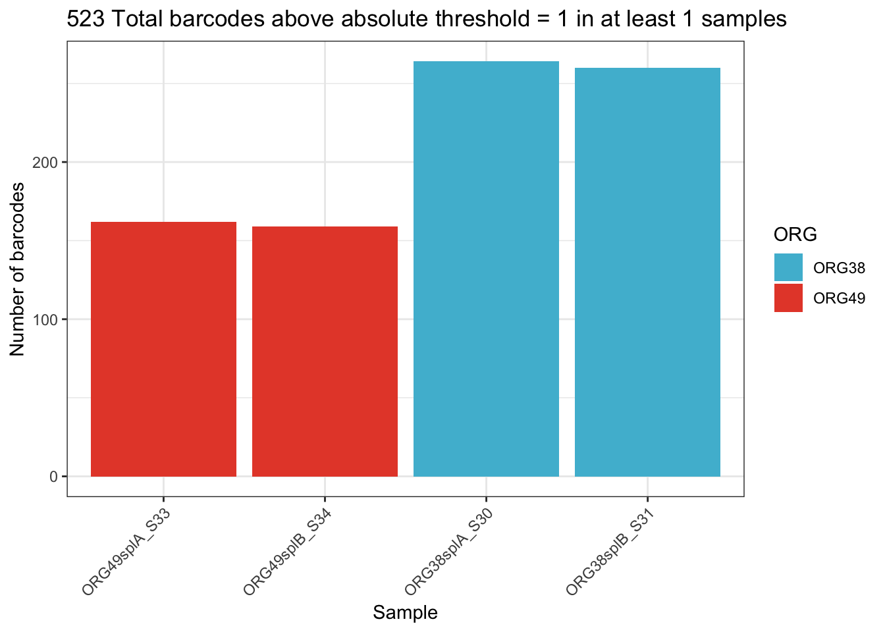
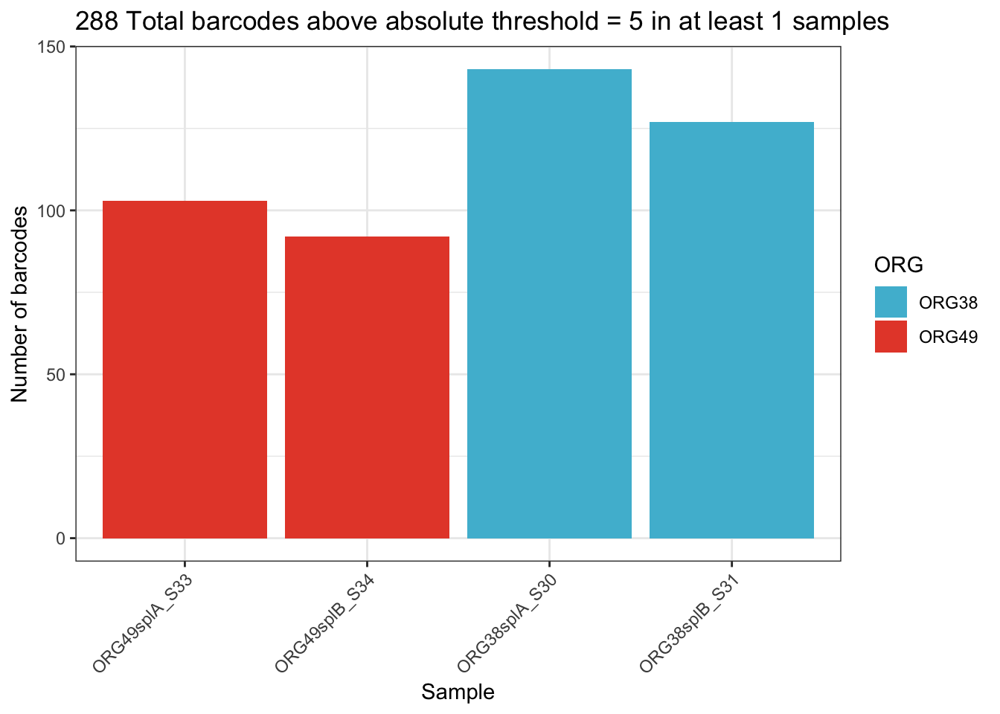
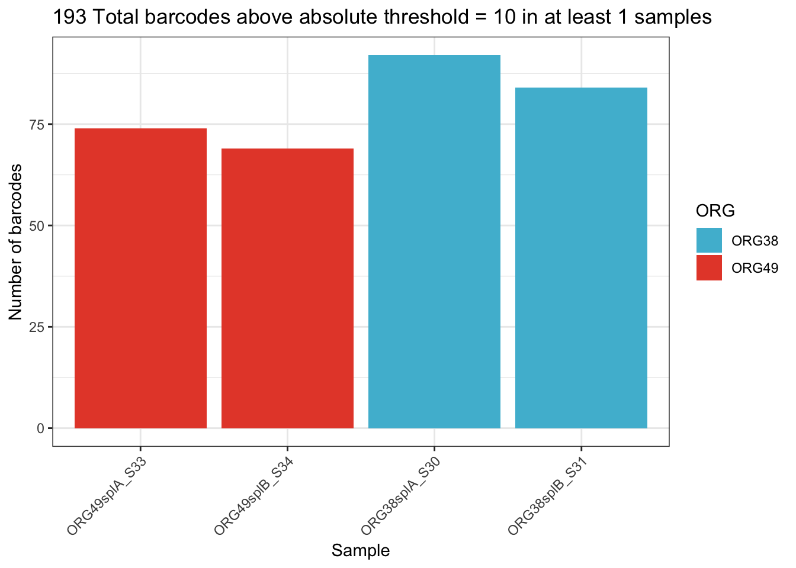

Visualisation
2024-07-29
Last updated: 2024-08-06
Checks: 7 0
Knit directory: SPLINTR-project/
This reproducible R Markdown analysis was created with workflowr (version 1.7.1). The Checks tab describes the reproducibility checks that were applied when the results were created. The Past versions tab lists the development history.
Great! Since the R Markdown file has been committed to the Git repository, you know the exact version of the code that produced these results.
Great job! The global environment was empty. Objects defined in the global environment can affect the analysis in your R Markdown file in unknown ways. For reproduciblity it’s best to always run the code in an empty environment.
The command set.seed(20240729) was run prior to running
the code in the R Markdown file. Setting a seed ensures that any results
that rely on randomness, e.g. subsampling or permutations, are
reproducible.
Great job! Recording the operating system, R version, and package versions is critical for reproducibility.
Nice! There were no cached chunks for this analysis, so you can be confident that you successfully produced the results during this run.
Great job! Using relative paths to the files within your workflowr project makes it easier to run your code on other machines.
Great! You are using Git for version control. Tracking code development and connecting the code version to the results is critical for reproducibility.
The results in this page were generated with repository version 727febd. See the Past versions tab to see a history of the changes made to the R Markdown and HTML files.
Note that you need to be careful to ensure that all relevant files for
the analysis have been committed to Git prior to generating the results
(you can use wflow_publish or
wflow_git_commit). workflowr only checks the R Markdown
file, but you know if there are other scripts or data files that it
depends on. Below is the status of the Git repository when the results
were generated:
Ignored files:
Ignored: .Rhistory
Ignored: .Rproj.user/
Note that any generated files, e.g. HTML, png, CSS, etc., are not included in this status report because it is ok for generated content to have uncommitted changes.
These are the previous versions of the repository in which changes were
made to the R Markdown (analysis/splintr_visualisation.Rmd)
and HTML (docs/splintr_visualisation.html) files. If you’ve
configured a remote Git repository (see ?wflow_git_remote),
click on the hyperlinks in the table below to view the files as they
were in that past version.
| File | Version | Author | Date | Message |
|---|---|---|---|---|
| Rmd | 727febd | kitadalvi | 2024-08-06 | Samplesheet/plots updated |
| html | 727febd | kitadalvi | 2024-08-06 | Samplesheet/plots updated |
| Rmd | 95214b2 | kitadalvi | 2024-08-06 | edited comments |
| html | 95214b2 | kitadalvi | 2024-08-06 | edited comments |
| html | 80299b8 | kitadalvi | 2024-08-06 | Update splintr_visualisation.html |
| Rmd | 67e383b | kitadalvi | 2024-08-06 | Finalised QC and comments |
| html | 67e383b | kitadalvi | 2024-08-06 | Finalised QC and comments |
| Rmd | 0d9c333 | kitadalvi | 2024-08-06 | Initial commit |
| html | 0d9c333 | kitadalvi | 2024-08-06 | Initial commit |
Importing RNA barcode count data
samplesheet <-readxl::read_excel("/Volumes/bioinf/home/ndalvi/SPLINTR/Data/samplesheet.xlsx")
samplesheet <- as.data.frame(samplesheet)
rownames(samplesheet) <- samplesheet$sample
#barcode DGE
rawdata <- read.delim("/Volumes/bioinf/home/ndalvi/SPLINTR/Results/reverse_complement_2/counts/all_counts_combined.tsv", check.names = FALSE, stringsAsFactors = FALSE)
barcode_data <- DGEList(counts=rawdata[,2:5])
rownames(barcode_data$counts)<- rawdata[,1]
#adding samplesheet information to DGElist object
barcode_data$samples$Sample <- samplesheet$Sample
barcode_data$samples$ORG <- samplesheet$ORG
barcode_data$samples$Batch <- samplesheet$BatchData QC and normalisation
Barcode thresholds
Visualizing the effect of different threshold parameters on barcode data for subsequent normalisation.
[1] "DGEList dimensions pre- and post-threshold"[1] 523 4
[1] 523 4
[1] "DGEList dimensions pre- and post-threshold"[1] 523 4
[1] 288 4
[1] "DGEList dimensions pre- and post-threshold"[1] 523 4
[1] 193 4
[1] "DGEList dimensions pre- and post-threshold"[1] 523 4
[1] 126 4
[1] "DGEList dimensions pre- and post-threshold"[1] 523 4
[1] 523 4
Comments:Continuing QC and normalisation with absolute threshold of at least 5 barcodes in a minimum of 1 sample.
Normalisation
[1] 523 4
[1] 288 4Comments: Overall, ORG49 seems to have better sequencing depth than ORG38
Counts per barcode

Visualisation
Bubble Plot
Note: In “collapsed” plots, SPLINTR replicates have been collapsed into a single variable so that results for a given ORG (eg. ORG38, ORG49) sample represent the mean of all of it’s replicates.
Individual
Barcode Plot
Comments: Overall, barcode composition comparison of individual replicates (38splA vs 49splA, and 38splB vs 49splB) do not show much variation at this early stage. However, there is some variation between collapsed samples (ORG38 vs ORG49) where ORG49 has larger barcode diversity than ORG38.
Principal Components Analysis

Comments: PCA plots show no clustering by sample (PC2) by do show clustering by organoid type (PC1) which accounts for 97% of variance. Further attributes to be considered include: batch, when additional SPLINTR samples are run/sequenced.
R version 4.4.0 (2024-04-24)
Platform: aarch64-apple-darwin20
Running under: macOS Sonoma 14.4.1
Matrix products: default
BLAS: /Library/Frameworks/R.framework/Versions/4.4-arm64/Resources/lib/libRblas.0.dylib
LAPACK: /Library/Frameworks/R.framework/Versions/4.4-arm64/Resources/lib/libRlapack.dylib; LAPACK version 3.12.0
locale:
[1] en_US.UTF-8/en_US.UTF-8/en_US.UTF-8/C/en_US.UTF-8/en_US.UTF-8
time zone: Australia/Melbourne
tzcode source: internal
attached base packages:
[1] grid stats graphics grDevices utils datasets methods
[8] base
other attached packages:
[1] readxl_1.4.3 bartools_1.0.0 ggplot2_3.5.1
[4] ComplexHeatmap_2.21.0 edgeR_4.3.7 limma_3.61.7
[7] workflowr_1.7.1
loaded via a namespace (and not attached):
[1] permute_0.9-7 rlang_1.1.4 magrittr_2.0.3
[4] clue_0.3-65 GetoptLong_1.0.5 git2r_0.33.0
[7] matrixStats_1.3.0 compiler_4.4.0 getPass_0.2-4
[10] mgcv_1.9-1 reshape2_1.4.4 png_0.1-8
[13] callr_3.7.6 vctrs_0.6.5 stringr_1.5.1
[16] pkgconfig_2.0.3 shape_1.4.6.1 crayon_1.5.3
[19] fastmap_1.2.0 backports_1.5.0 labeling_0.4.3
[22] utf8_1.2.4 promises_1.3.0 rmarkdown_2.27
[25] ps_1.7.7 purrr_1.0.2 xfun_0.46
[28] cachem_1.1.0 jsonlite_1.8.8 highr_0.11
[31] later_1.3.2 broom_1.0.6 parallel_4.4.0
[34] cluster_2.1.6 R6_2.5.1 bslib_0.8.0
[37] stringi_1.8.4 RColorBrewer_1.1-3 car_3.1-2
[40] jquerylib_0.1.4 cellranger_1.1.0 Rcpp_1.0.13
[43] iterators_1.0.14 knitr_1.48 IRanges_2.39.2
[46] httpuv_1.6.15 Matrix_1.7-0 splines_4.4.0
[49] tidyselect_1.2.1 rstudioapi_0.16.0 abind_1.4-5
[52] yaml_2.3.10 vegan_2.6-6.1 doParallel_1.0.17
[55] codetools_0.2-20 processx_3.8.4 plyr_1.8.9
[58] lattice_0.22-6 tibble_3.2.1 withr_3.0.1
[61] evaluate_0.24.0 circlize_0.4.16 pillar_1.9.0
[64] ggpubr_0.6.0 carData_3.0-5 whisker_0.4.1
[67] foreach_1.5.2 stats4_4.4.0 generics_0.1.3
[70] rprojroot_2.0.4 S4Vectors_0.43.2 munsell_0.5.1
[73] scales_1.3.0 glue_1.7.0 tools_4.4.0
[76] locfit_1.5-9.10 ggsignif_0.6.4 fs_1.6.4
[79] tidyr_1.3.1 colorspace_2.1-1 nlme_3.1-165
[82] cli_3.6.3 ineq_0.2-13 fansi_1.0.6
[85] dplyr_1.1.4 gtable_0.3.5 ggsci_3.2.0
[88] rstatix_0.7.2 sass_0.4.9 digest_0.6.36
[91] BiocGenerics_0.51.0 rjson_0.2.21 farver_2.1.2
[94] htmltools_0.5.8.1 lifecycle_1.0.4 httr_1.4.7
[97] GlobalOptions_0.1.2 statmod_1.5.0 MASS_7.3-61